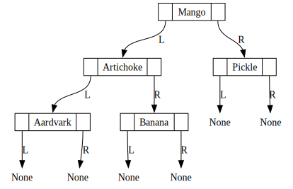

Imagine you’re on a team trying to make a calculator
One person can write the Screen class, another person can write the Button class, and so on
Natural division of labor! (May seem silly for a calculator, but imagine as your app scales up)
Key OOP Feature #2: Abstraction
Abstraction complements this Encapsulation: the Screen team doesn’t need to know the internal details of Button (just it’s API), and vice-versa
Relevant data and functions can be “public”, irrelevant internal data and functions “private”
(Like with type hints), Python doesn’t enforce this distinction, but (unlike with type hints) most libraries do separate public from private by a variable-naming convention…
Public, Protected, Private Attributes in Python
[Public (default)] No underscores: public_var
[Protected] One underscore: _protected_var
[Private] Two underscores: __private_var
Code
class MySecretInfo: __the_info ="I love Carly Rae Jepsen"info_obj = MySecretInfo()info_obj.__the_info
---------------------------------------------------------------------------AttributeError Traceback (most recent call last)
CellIn[1], line 5 2 __the_info = "I love Carly Rae Jepsen" 4 info_obj = MySecretInfo()
----> 5info_obj.__the_infoAttributeError: 'MySecretInfo' object has no attribute '__the_info'
Guess we can’t access it then, right? 😮💨
Code
info_obj._MySecretInfo__the_info
'I love Carly Rae Jepsen'
NOO MY SECRET!!! 😭
Pls don’t tell anyone
Key OOP Features #3-4: Inheritance, Polymorphism
Better explained in diagrams than words (next 10 slides!), but we can get a sense by thinking about their etymology:
“Inheritance” comes from “heir”, like “heir to the throne”
Parent passes on [things they possess] to their children
“Polymorphism”: Poly = “many”, Morphe = “forms”
How does Python know what to do when we print()?
It “just works” because print() (through __str__()) takes on many (!) forms (!): each type of object has its own implementation of __str__()
Warning: node None_0, port f1 unrecognized
Warning: node None_1, port f1 unrecognized
Warning: node None_2, port f1 unrecognized
Warning: node None_3, port f1 unrecognized
Warning: node None_4, port f1 unrecognized
Warning: node None_5, port f1 unrecognized

So Then… Why Is This a Whole DSAN Class?
The core structures are identical, but we can optimize different goals (efficient insertion, sorting, retrieval, deletion, …) by changing the invariants maintained by the algorithms internal to our structure
Crucial Insertion-Sort invariant: \(\textsf{Sorted}(1,i)\) true when we move to entry \(i + 1\) (key)
Crucial HW2(!) invariant: \(\textsf{Up-To-Date-Favorite}(1,i-1)\) true when entry \(i + 1\) (next result in dataset) arrives
\(\implies\) Efficiency of obtaining favorite style guaranteed to be constant-time, \(\overline{O}(1)\)!
Otherwise, would be \(\overline{O}(n) > \overline{O}(1)\) (linear approach) or at best \(\overline{O}(\log_2(n)) > \overline{O}(1)\) (divide-and-conquer)
Hash Tables
*(Spoiler alert, so you know I’m not lying to you: this is a LinkedList with some additional structure!)
You just got hired as a cashier (Safeway cashiering alum myself 🫡)
The scanner is broken (spoiler #2: the scanner uses a hash table), so you start writing down items along with their prices, one-by-one, as items come in…
As the list gets longer, it gets harder and harder to find where you wrote down a specific item and its price
As you now know, you could use linear search, \(\overline{O}(n)\), or if you ensure alphabetical order (an invariant!), you could use binary, divide-and-conquer search, \(\overline{O}(\log_2(n))\)
We can do even better: \(\overline{O}(1)\). First w/magic, but then math
Strange-At-First Technique for Algorithm Analysis: Oracles
What if we had a magical wizard who could just tell us where to find an item we were looking for?
Sounds like I’m joking or saying “what if we had a billion $ and infinite aura and we could fly and walk through walls”
And yet, through the magic of math and computer science, there are concrete hashing algorithms which ensure (in a mathematically-provable way!) “almost certain” \(\overline{O}(1)\) lookup time
Mathematical Strategy of Oracles
We’ll use a concrete, simplified hash function to illustrate
Mathematically we’ll be able to get something like
Our hash function: hash(item) = first letter of item
\[
h(\texttt{x}) = \texttt{x[0]}
\]
h('Banana') = 'B', h('Monkey') = 'M'
With this function in hand, we can create a length-26 array, one slot for each letter in alphabet, and then write down (item, price) pairs in whatever slot item hashes to
The Importance of Differentiating Operations: Insertion vs. Lookup
So far, we have \(\overline{O}(1)\)insertion via hashing
We also get \(\overline{O}(1)\)lookup!
When customer hands us an item (say, 'Banana'), we compute the hash (B), look in that slot, and obtain the price for bananas.
We also get \(\overline{O}(1)\)updating (hash to find the old price, update it to have new price) and \(\overline{O}(1)\)deletion (hash to find the slot containing the item, then erase it from that slot)
So What’s the Catch???
BLUEBERRIES show up to ruin our day (as usual 😞)
We hash, so far so good: h('Blueberries') = 'B'
But then we go to the B slot and see that (Bananas, 10) is already there!!! Wtf do we do here… don’t panic!
The answer? We open our HW2 from DSAN 5500 and remember that we have our lovely friend the LinkedList that we can use whenever and however we want!
Arrays vs. Linked Lists
Jeff is hiding something here… Why jump to LinkedList? Why not just… another length-26 array, for example?
For this we open up our Week 1 slides and remember the stack vs. heap distinction: we know how many letters in the alphabet, we don’t know how many items starting with B (or, if we do, we want to be able to expand/contract our price list to handle new/discontinued items)
Terminology for this kind of “hybrid” data structure: HashTable is an Array that “degenerates into” a LinkedList (when there are collisions)
Look How Far We Came!
Beginning of class: Only structure we knew allowing insertion (LinkedList) was \(\overline{O}(n)\) for everythihg
End of class: New structure where suddenly everything is \(\overline{O}(1)\), except in “unlucky” cases, in which it partially “degenerates” into a LinkedList
\(\implies\) The “inevitable” \(\overline{O}(n)\) runtime has transformed into the unlucky worst-case upper bound
\(\implies\) By taking core data structures/algorithms from your toolkit, you can “piece together” hybrid structures whose whole (runtime) is better than the sum of its parts
Taking This Idea and Running With It
Next week we’ll look at BinarySearchTree (BST)
Since it’s just a glorified LinkedList, we’ll be able to take our HashMap from today and “drop in” the BST to play the role the LinkedList is playing right now
If collision, we’ll create a BST with its \(\overline{O}(\log(n))\) operations, rather than a LinkedList with its \(\overline{O}(n)\) operations
\(\implies\)HashMap will go from:
\(\overline{O}(1)\) best-case but \(\overline{O}(n)\) worst-case to
\(\overline{O}(1)\) best-case but \(\overline{O}(\log_2(n))\) worst-case!